Problems & Solutions
There are a handful of CRM applications out there (e.g. HubSpot CRM, Nutshell, etc.). However, some of these applications are not portable, user friendly and cause an inconsistent workflow for the user. There are other applications that allows freelancers and clients to manage their work, but those applications were developed for one purpose only (e.g. Invoice2Go, Fiverr, etc.). By designing this application, we hope to achieve optimum workflow by having all of the clients, services, projects and invoices all in one responsive application.
Roles & Responsibilities
While my partner’s role is the lead programmer, my role is the lead designer. My responsibilities were to manage the conceptualisations, iterations, prototyping, design-thinking and documentations (i.e. S.W.O.T Analysis, Business Models, etc.).
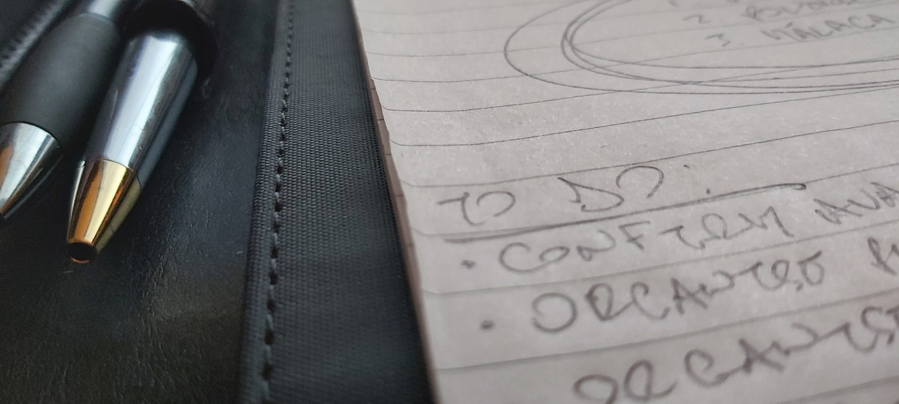
Process
User Research – Quantitative Method
I identified issues and standard workflows for both freelancers and clients via survey and interviews.
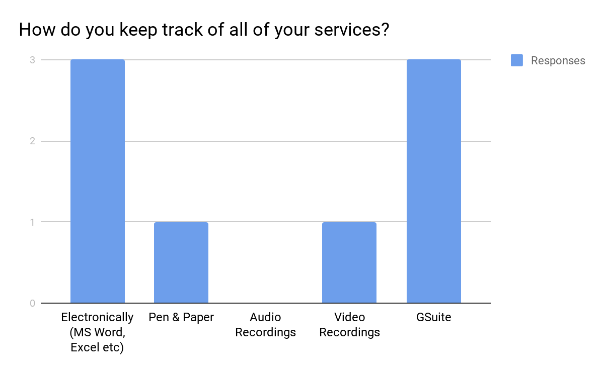
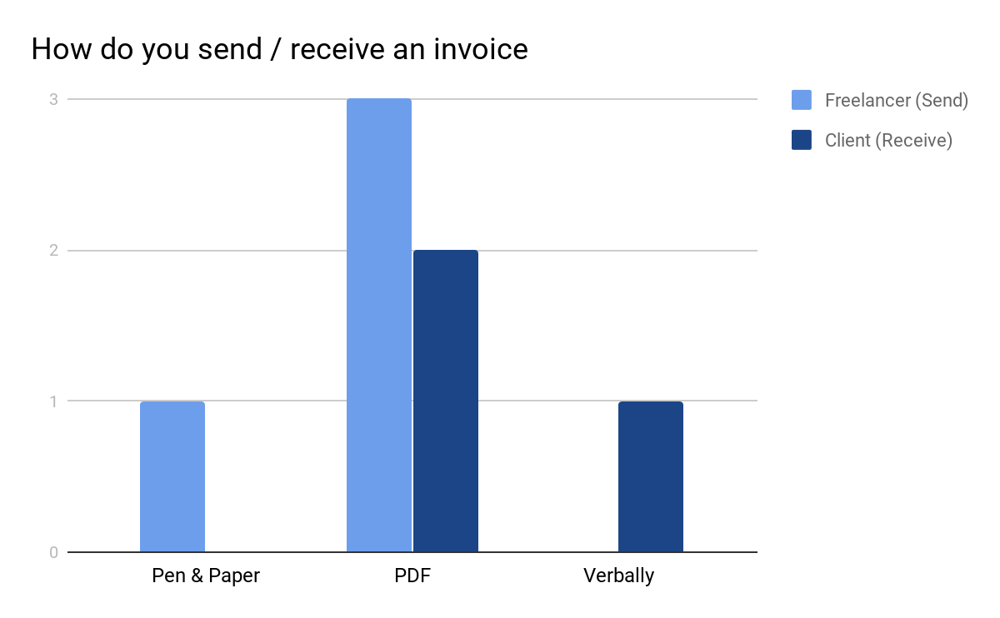
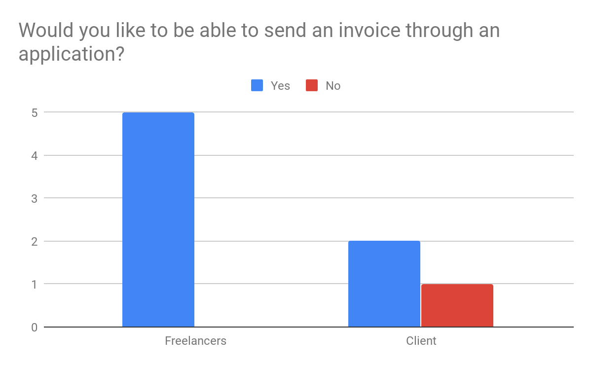
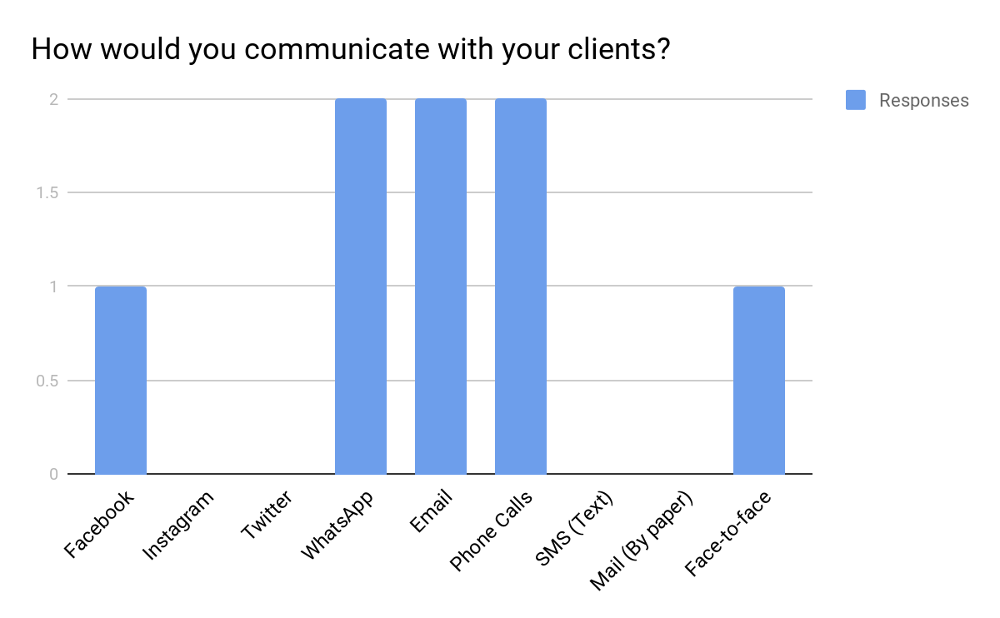
User Research – Qualitative Method
I created personas and scenarios as seen below:
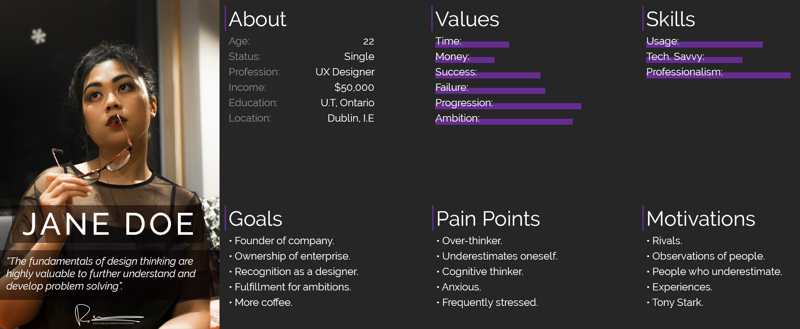
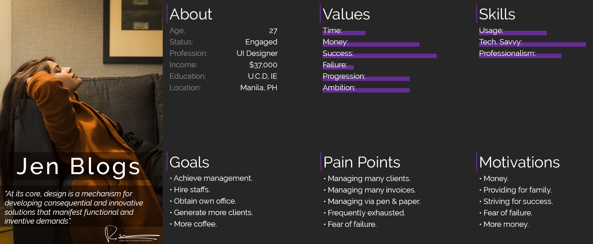
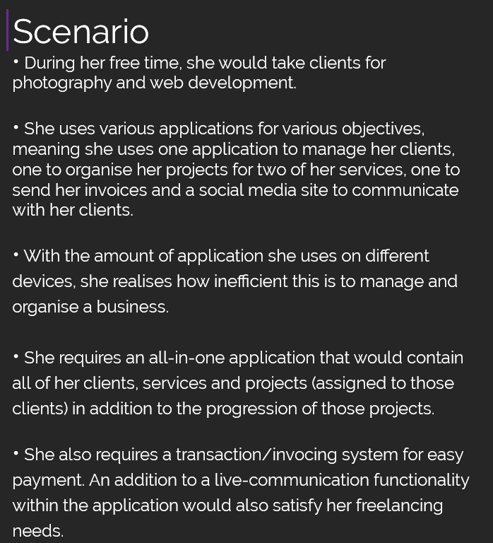

Designing the Application – Wireframes
After planning on how to develop the project, it was time for something that I excel at: conceptualising and iterating.
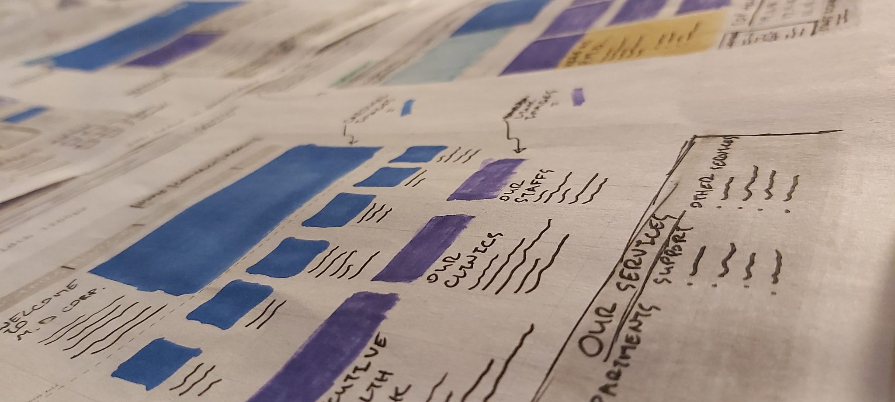
Designing the Application – Paper Prototype
As an example, here are the paper prototypes for the login screen:
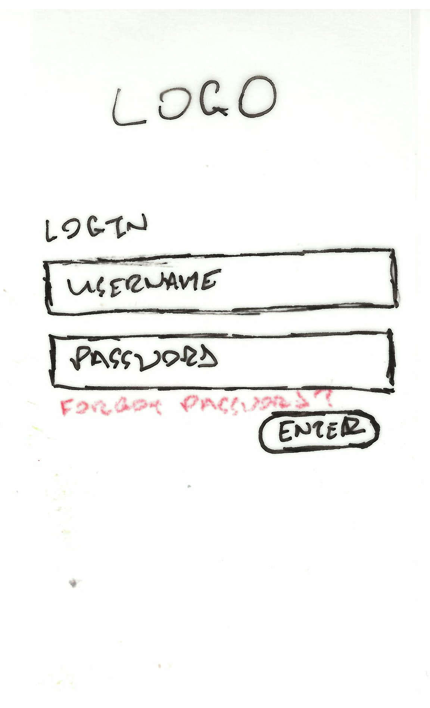
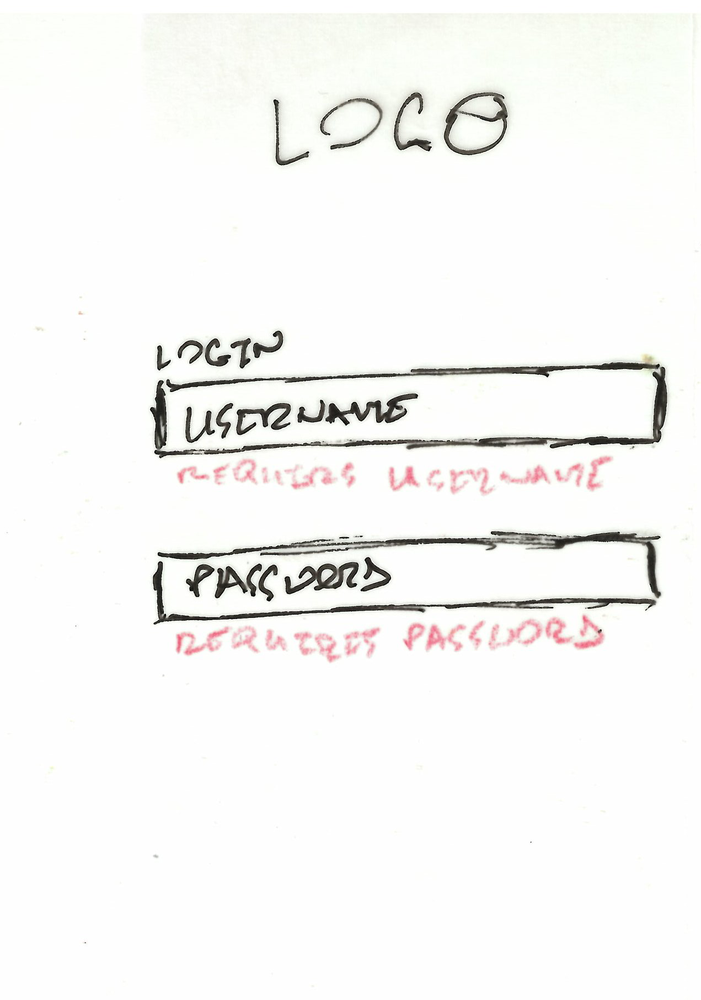
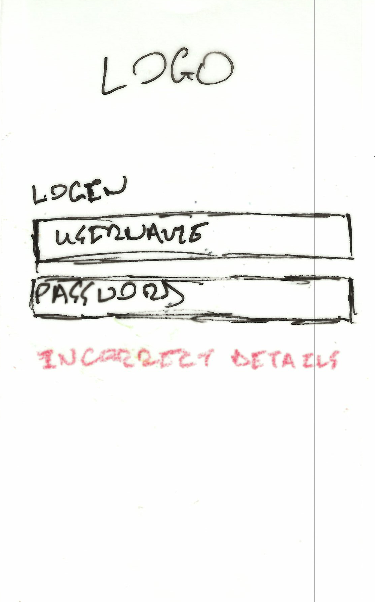
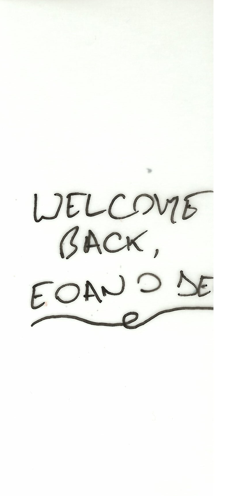
Designing the Application – Hi-Fi Prototype
This screencast demonstrates the functionalities of the Mobile-first concept.
Heuristic Evaluation on Hi-Fi Prototype:
Visibility of System Status:
This concept includes a circular pre-loader to notify the users
that the application is responding. There is also a real-time
completion-rate circular graph that gets updated whenever a
freelancer-user completes a task. This is then updated and
displayed for the client-user.
User Control and Freedom:
This prototype includes the same rule as the paper version but
with improvements. These improvements are the edit and delete
functionalities are now more common per feature.
Error Prevention:
The only error prevention displayed here is during the login
phase.
Flexibility and Efficiency of Use:
The flexibility and efficiency of use has been improved due to
the removal of the filler pages.
Recognise, Diagnose and Recover from Errors:
This has been slightly improved in comparison to the paper
prototype.
Match Between System and Real World:
The system in this prototype has improved the simplicity and
clarity in comparison to the paper version.
Consistency and Standards:
The U.I is consistent. As seen in the Hi-Fi Prototype, the
Material theme and environment is evident.
Recognition Rather than Recall:
The application now displays the important data first.
Aesthetic and Minimalist Design:
The dark-theme adds professionalism, elegance, style and drama
to the application. In addition to the minimalistic concept, the
Raleway typography also adds a modern flair to the application.
Help and Documentation:
While documentation for the application features is absent, the
About, Contact Us and Privacy pages contains information to
guide the user.
Style Guide
Rules were made to create order thus why I have created our own style guide.
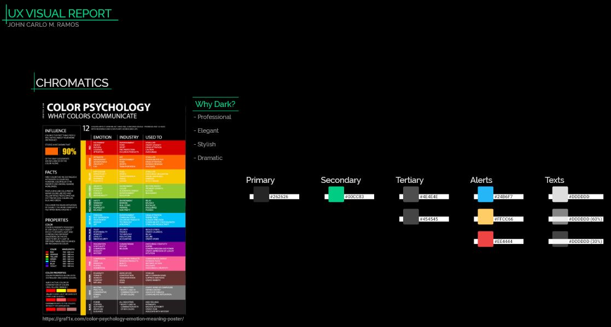
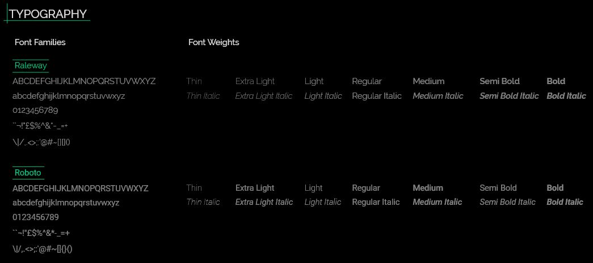
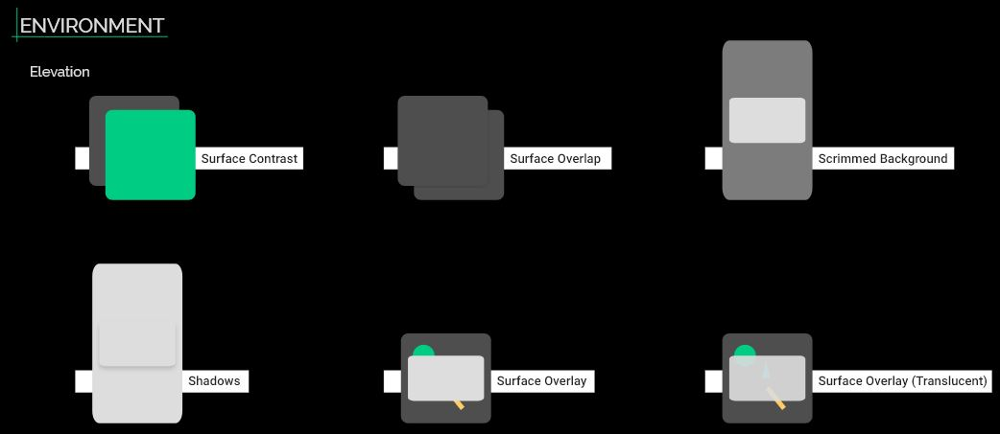
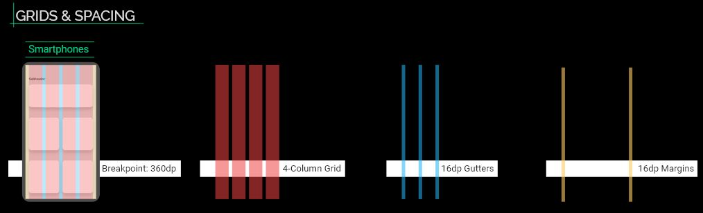
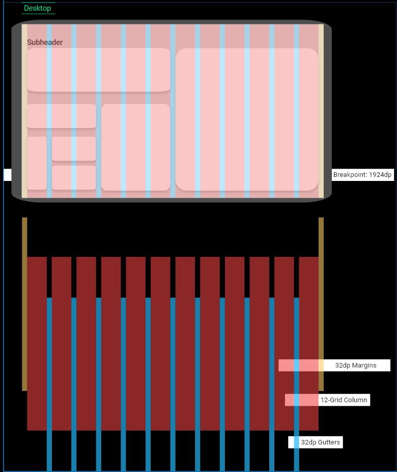
Outcomes
In conclusion, I have decided to completely change our UI from Material Design to IBM Carbon Design. The reason for such a bold decision is due to my further research on their component library and design rules. Not only is it more contemporary and cleaner than Material (subjective opinion), it also feels more professional, elegant and stylish for both light and dark mode versions. Considering our application is a CRM, it roars professionalism and businesslike while sufficing the UI/UX satisfactory. In terms of Carbon, IBM has created this component library for ease of accessibility. The goal that I achieved during this project is the further understanding of the principals for UI/UX design (i.e. user manipulation, user needs, consistency, design process, visual hierarchy, visual grammar, etc.). Saying that however, I still have a lot to learn.
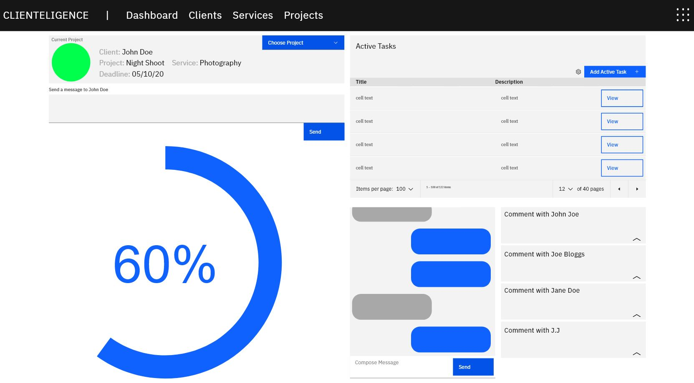